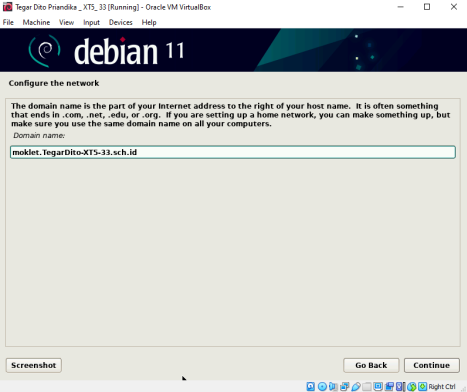
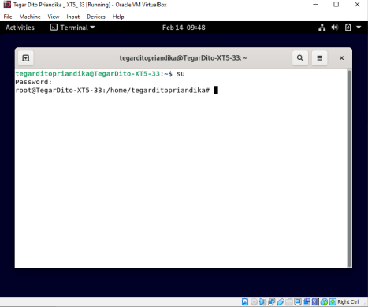

Linux Debian 11 'Bullseye'
Posted by Tegar Dito
Om Tegar- Debian adalah sistem operasi yang hebat dalam dirinya sendiri, tetapi juga, itu membuat basis yang sangat baik untuk distribusi Linux lainnya juga. Misalnya, Ubuntu mungkin adalah distro Linux paling terkenal di dunia, dan berbasis Debian. Ada banyak sistem operasi lain, seperti deepin Linux, yang juga berdiri di atas bahu figuratif Debian. Itulah mengapa sangat penting ketika versi baru Debian dirilis.
Dan Hari Ini Kita akan Belajar Setup Debian Itu Sendiri Sebelum kita masuk pada tahap Virtual LAN Trunking (VLAN Trunking). pada blog selanjutnya.
Linux Debian 11 'Bullseye'
Posted by Tegar Dito
Om Tegar- SETUP DEBIAN
Pastikan anda sudah berhasil melakukan instalasi debian 11, dan sudah masuk pada menu setup debian pada bagian host name sebagai contoh kita gunakan nama - nama kelas - no.absen. lalu click continue.

Code
TegarDitoXT5-33
Domain Name
setelah mengisi host name kalian akan di mintai untuk mengisi domain
Code
moklet.TegarDitoXT5-33.sch.id
password ROOT user
setelah kalian menentukan nama domain kalian, langkah berikutnya kalian
akan di minta untuk mengisi password root sebanyak 2 kali,
Code
rootT533
password LOGIN user
setelah kalian menentukan password root , kalian juga
akan di minta untuk mengisi password login / password user sebanyak 2 kali,

Code
tegarT533
Rename Computer
silahkan gunakan nama kalian untuk rename komputer karena hal tersebut mempermudah kita untuk mengingat nya.

Code
TegarDitoPriandika
Terminal
setelah debian terinstall untuk memasukki debian kalian akan dimintai password, password yang harus di masukkan adalah click disini
Setelah berhasil masukk silahkan click ACTIVITIES di pojok kiri atas lalu ketikkan "TERMINAL". lalu ketik "su" untuk memasuki menu root dan masukkan password root tidak usah khawatir karena password yang kita input memang INVISIBLE
Code
$ su
password: rootT533
Terimakasih untuk yang sudah mengikuti blog ini sampai akhir. untuk kelanjutan configurasi Virtual Lan Trunking selajutnya akan di jelaskan di part 2 atau kalian bisa click IP Configuration Part 2 silahkan tinggalkan komentar anda di contact jika mengalami kesulitan.